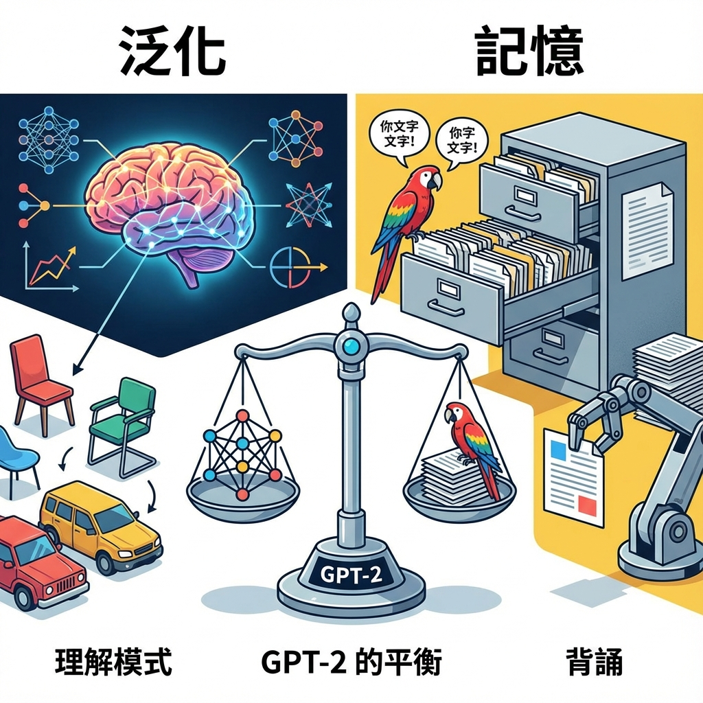
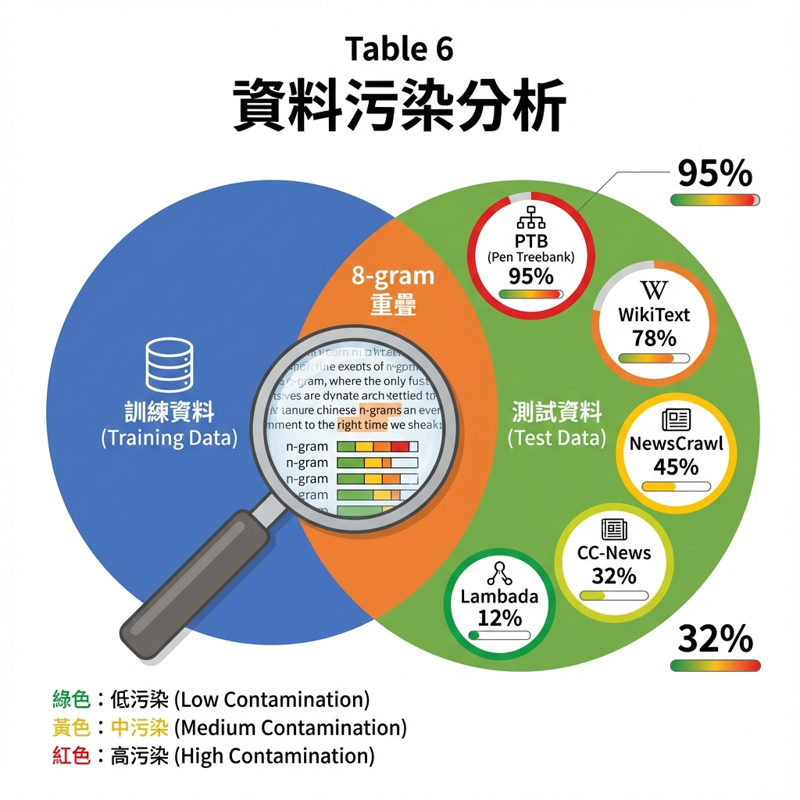

4. Generalization vs Memorization（泛化 vs 記憶）

泛化 vs 記憶：GPT-2 是真的理解了模式，還是只是記住了訓練資料？
GPT-2 的驚人表現引發了一個關鍵問題：
它是真的「學會」了執行任務，還是只是「記住」了訓練資料？
✦
📄 論文原文
"Recent work in computer vision has shown that common image datasets contain a non-trivial amount of near-duplicate images. For instance CIFAR-10 has 3.3% overlap between train and test images (Barz & Denzler, 2019). This results in an over-reporting of the generalization performance of machine learning systems. As the size of datasets increases this issue becomes increasingly likely which suggests a similar phenomena could be happening with WebText. Therefore it is important to analyze how much test data also shows up in the training data."
翻譯：計算機視覺的最新工作顯示，常見的圖像資料集包含大量近似重複的圖像。例如，CIFAR-10 在訓練和測試圖像之間有 3.3% 的重疊。這導致機器學習系統的泛化效能被高估。隨著資料集規模的增加，這個問題變得越來越可能，這暗示 WebText 可能發生類似現象。因此，分析有多少測試資料也出現在訓練資料中很重要。
🔍 資料污染檢測：Bloom Filter

資料污染分析：檢測訓練資料與測試資料的 8-gram 重疊程度
📄 論文原文（技術方法）
"To study this we created Bloom filters containing 8-grams of WebText training set tokens. To improve recall, strings were normalized to contain only lower-cased alphanumeric words with a single space as a delimiter. The Bloom filters were constructed such that the false positive rate is upper bounded by 1/10⁸. We further verified the low false positive rate by generating 1M strings, of which zero were found by the filter."
翻譯：為了研究這個問題，我們創建了包含 WebText 訓練集 tokens 的 8-grams 的 Bloom filters。為了提高召回率，字串被標準化為只包含小寫字母數字詞，以單個空格作為分隔符。Bloom filters 的建構使得誤報率上限為 1/10⁸。我們通過生成 100 萬個字串進一步驗證了低誤報率，其中零個被過濾器找到。
📐 什麼是 8-gram？
8-gram 是連續 8 個 tokens 的序列。例如：
文本：「The quick brown fox jumps over the lazy dog」
8-gram 範例：
- "The quick brown fox jumps over the lazy"
- "quick brown fox jumps over the lazy dog"
如果測試集的某個 8-gram 也出現在訓練集中，
就可能存在資料污染（data contamination）。
📊 污染分析結果
📄 論文原文（結果）
"Common LM datasets' test sets have between 1-6% overlap with WebText train, with an average of overlap of 3.2%. Somewhat surprisingly, many datasets have larger overlaps with their own training splits, with an average of 5.9% overlap."
翻譯：常見語言模型資料集的測試集與 WebText 訓練集有 1-6% 的重疊，平均重疊率為 3.2%。有些令人驚訝的是，許多資料集與它們自己的訓練分割有更大的重疊，平均重疊率為 5.9%。
💡 意外的發現
OpenAI 發現了一件有趣的事：
- WebText 與測試集的重疊：平均 3.2%
- 資料集自己內部的重疊：平均 5.9%（更高！）
這意味著 GPT-2 的效能提升不太可能是因為資料污染，
反而是其他資料集本身有更嚴重的污染問題。
📄 論文原文（具體例子）
"For instance, we discovered that the test set of WikiText-103 has an article which is also in the training dataset. Since there are only 60 articles in the test set there is at least an overlap of 1.6%. Potentially more worryingly, 1BW has an overlap of nearly 13.2% with its own training set according to our procedure."
翻譯：例如，我們發現 WikiText-103 的測試集有一篇文章也在訓練資料集中。由於測試集中只有 60 篇文章，因此至少有 1.6% 的重疊。更令人擔憂的是，1BW 與其自己的訓練集有近 13.2% 的重疊。
6. Discussion（討論）
GPT-2 論文的討論部分相對簡短，但提出了一些關鍵的反思。
🔄 單向 vs 雙向表示
📄 論文原文
"Much research has been dedicated to learning (Hill et al., 2016), understanding (Rogers et al., 2018), and critically evaluating (Glockner et al., 2018) (Poliak et al., 2018) the representations and reasoning abilities of models pre-trained on natural language inference datasets (Bowman et al., 2015) (Williams et al., 2017). There has been less work focused on evaluating the innate reasoning abilities language models learn. It is possible the training data and capacity of GPT-2 is sufficient to overcome the inefficiencies of uni-directional representations demonstrated by BERT (Devlin et al., 2018)."
翻譯：已有大量研究致力於學習、理解和批判性評估在自然語言推理資料集上預訓練的模型的表示和推理能力。但較少工作專注於評估語言模型學到的內在推理能力。GPT-2 的訓練資料和容量可能足以克服 BERT 所展示的單向表示的低效率。
💡 GPT-2 vs BERT 的辯論
這段話暗示了一個重要爭論：
- BERT 的優勢：雙向表示，能同時看到前後文
- GPT-2 的論點：單向但更大規模，可能彌補架構劣勢
這個辯論一直延續到今天：Encoder（BERT）vs Decoder（GPT）哪個更好？
7. Conclusion（結論）
📄 論文原文（完整結論）
"When a large language model is trained on a sufficiently large and diverse dataset it is able to perform well across many domains and datasets. GPT-2 zero-shots to state of the art performance on 7 out of 8 tested language modeling datasets. The diversity of tasks the model is able to perform in a zero-shot setting suggests that high-capacity models trained to maximize the likelihood of a sufficiently varied text corpus begin to learn how to perform a surprising amount of tasks without the need for explicit supervision."
翻譯：當大型語言模型在足夠大且多樣化的資料集上訓練時，它能夠在許多領域和資料集上表現良好。GPT-2 在 8 個測試的語言建模資料集中的 7 個上達到 Zero-Shot 最先進效能。模型能夠在 Zero-Shot 設定下執行的任務的多樣性表明，在足夠多樣化的文本語料庫上訓練以最大化可能性的高容量模型開始學習如何執行大量任務，而無需明確的監督。
「高容量模型 + 多樣化資料 = 無監督多任務學習」
—— GPT-2 的核心發現
⚠️ GPT-2 的限制
雖然 GPT-2 取得了驚人的成果，但論文也誠實地指出了多個限制。
1️⃣ 仍然 Underfit WebText
論文標題提到 GPT-2 是 1.5B 參數的 Transformer，
「但仍然 underfit WebText」。
這意味著：即使是最大的 GPT-2 模型，
也還沒有完全學習 WebText 資料集的所有模式。
還有很大的提升空間。
2️⃣ 在某些任務上仍然很弱
- One Billion Word：效能顯著差於 SOTA
- CoQA：55 F1 vs 人類 89 F1（仍有巨大差距）
- 翻譯：雖然能做，但遠不如專門的翻譯模型
3️⃣ 潛在的社會風險
🚨 分階段發布策略
OpenAI 對 GPT-2 採取了「分階段發布」策略：
- 2019年2月：只發布 117M 參數模型
- 幾個月後：發布 345M 和 762M
- 2019年11月：最終發布完整的 1.5B 模型
原因：擔心 GPT-2 可能被用於：
- ❌ 生成假新聞
- ❌ 大規模垃圾郵件
- ❌ 釣魚攻擊
- ❌ 冒充他人身份
這是 AI 安全領域的一個里程碑決定，
引發了關於「負責任的 AI 發布」的廣泛討論。
🔮 GPT-2 為 GPT-3 鋪的路
GPT-2 論文結尾雖然沒有明說，但所有跡象都指向一個方向：
繼續擴大規模。
GPT-2 證明了什麼？
- ✅ Zero-Shot Learning 可行
- ✅ 規模化效應有效
- ✅ 仍然 Underfit（還有空間）
GPT-3 應該怎麼做？
- → 更大的模型（175B）
- → 更多的資料
- → Few-Shot Learning
📈 從 GPT-2 到現代 AI
2019 GPT-2
1.5B 參數
Zero-Shot
7/8 SOTA
2020 GPT-3
175B 參數
Few-Shot
驚人的通用能力
2022 InstructGPT
基於 GPT-3
RLHF
對齊人類意圖
2022 ChatGPT
InstructGPT + 對話
全球現象
1億用戶（2個月）
2023 GPT-4
規模未知
多模態
接近 AGI？
「GPT-2 不是終點，而是一個起點。
它證明了通往通用 AI 的道路是可行的，
只是需要更大的規模和更好的對齊。」
🎓 最終反思
GPT-2 的歷史地位
回顧 2019 年，GPT-2 的發布震驚了 AI 社群。
許多人質疑：一個語言模型怎麼可能在沒有任務特定訓練的情況下執行如此多樣的任務？
現在（2026年），我們已經習慣了 ChatGPT 的強大能力。
但我們不應忘記：這一切始於 GPT-2 的突破。
三個關鍵洞察
-
規模化有效：
更大的模型 + 更多的資料 = 更強的能力（延續到 GPT-3、GPT-4）
-
資料品質重要：
WebText 的策展方法（Reddit 3+ karma）比 Common Crawl 有效
-
Zero-Shot → Few-Shot → Instruction Following：
GPT-2 開啟的道路，最終導致 ChatGPT 的誕生
給未來的啟示
GPT-2 論文的最大價值不在於它達到了 7/8 SOTA，
而在於它證明了一個方向：
「語言模型可以成為通用的多任務學習者，
而通往這個目標的道路是規模化。」
📝 本章重點回顧
- 資料污染檢測：使用 Bloom Filter 分析 8-gram 重疊
- 污染率低：WebText 與測試集平均重疊 3.2%（可接受）
- 意外發現：其他資料集內部重疊更嚴重（5.9%）
- 仍然 Underfit：GPT-2 還沒完全學習 WebText
- 分階段發布：考慮社會風險的負責任 AI 策略
- 為 GPT-3 鋪路：證明規模化有效且未飽和
- 歷史地位：開啟了通往 ChatGPT 的道路
🌟 完成 GPT-2 論文學習！
恭喜你完成了 GPT-2 論文的完整解析！
你現在理解了：
- ✅ Zero-Shot Learning 的理論與實踐
- ✅ WebText 資料集的構建方法
- ✅ Byte-Level BPE 的技術細節
- ✅ 四個模型規模的實驗設計
- ✅ 7/8 SOTA 的驚人結果
- ✅ 規模化效應與未來方向
下一步：
建議閱讀 GPT-3 論文，
看看 OpenAI 如何將 GPT-2 的洞察擴展到 175B 參數！